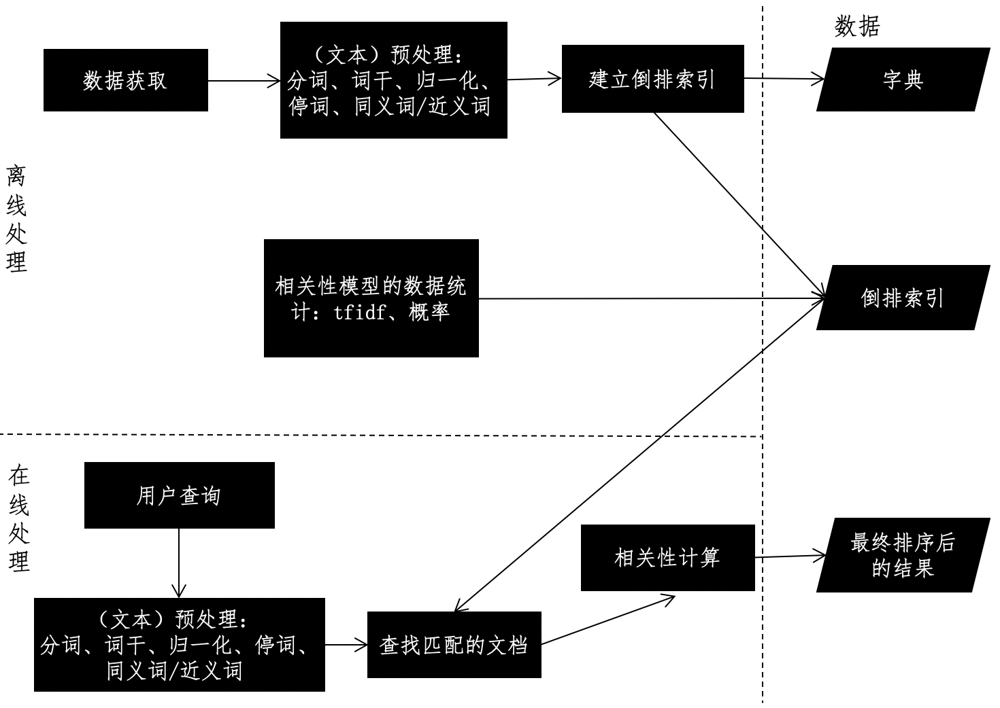
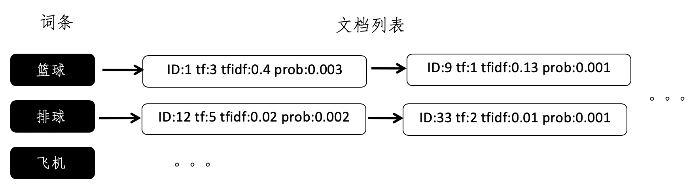
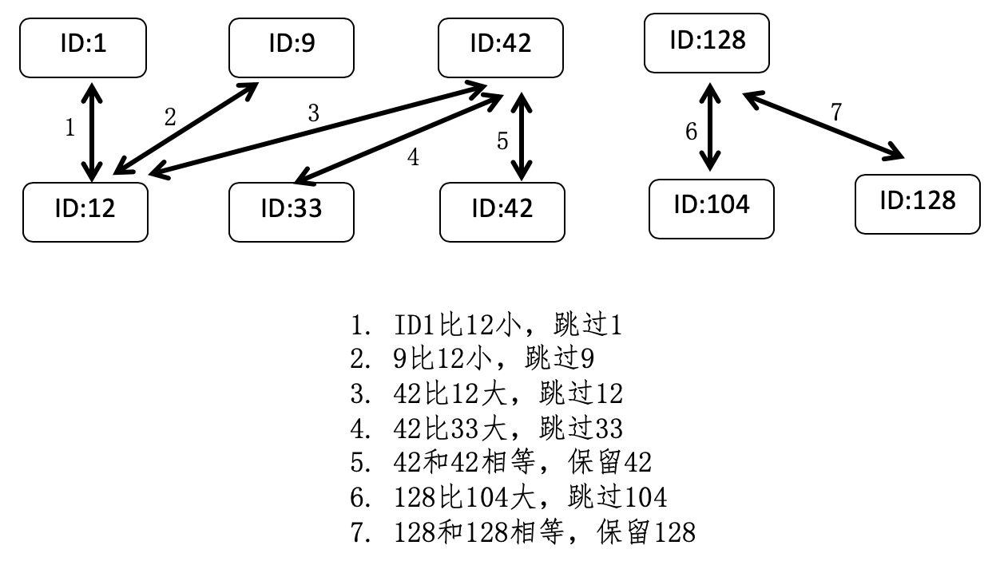
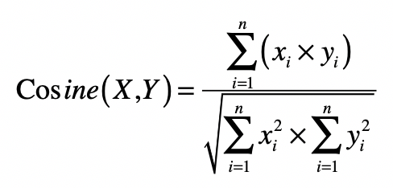

- 01 二进制：不了解计算机的源头，你学什么编程.md.html
- 02 余数：原来取余操作本身就是个哈希函数.md.html
- 03 迭代法：不用编程语言的自带函数，你会如何计算平方根？.md.html
- 04 数学归纳法：如何用数学归纳提升代码的运行效率？.md.html
- 05 递归（上）：泛化数学归纳，如何将复杂问题简单化？.md.html
- 06 递归（下）：分而治之，从归并排序到MapReduce.md.html
- 07 排列：如何让计算机学会“田忌赛马”？.md.html
- 08 组合：如何让计算机安排世界杯的赛程？.md.html
- 09 动态规划（上）：如何实现基于编辑距离的查询推荐？.md.html
- 10 动态规划（下）：如何求得状态转移方程并进行编程实现？.md.html
- 11 树的深度优先搜索（上）：如何才能高效率地查字典？.md.html
- 12 树的深度优先搜索（下）：如何才能高效率地查字典？.md.html
- 13 树的广度优先搜索（上）：人际关系的六度理论是真的吗？.md.html
- 14 树的广度优先搜索（下）：为什么双向广度优先搜索的效率更高？.md.html
- 15 从树到图：如何让计算机学会看地图？.md.html
- 16 时间和空间复杂度（上）：优化性能是否只是“纸上谈兵”？.md.html
- 17 时间和空间复杂度（下）：如何使用六个法则进行复杂度分析？.md.html
- 18 总结课：数据结构、编程语句和基础算法体现了哪些数学思想？.md.html
- 19 概率和统计：编程为什么需要概率和统计？.md.html
- 20 概率基础（上）：一篇文章帮你理解随机变量、概率分布和期望值.md.html
- 21 概率基础（下）：联合概率、条件概率和贝叶斯法则，这些概率公式究竟能做什么？.md.html
- 22 朴素贝叶斯：如何让计算机学会自动分类？.md.html
- 23 文本分类：如何区分特定类型的新闻？.md.html
- 24 语言模型：如何使用链式法则和马尔科夫假设简化概率模型？.md.html
- 25 马尔科夫模型：从PageRank到语音识别，背后是什么模型在支撑？.md.html
- 26 信息熵：如何通过几个问题，测出你对应的武侠人物？.md.html
- 27 决策树：信息增益、增益比率和基尼指数的运用.md.html
- 28 熵、信息增益和卡方：如何寻找关键特征？.md.html
- 29 归一化和标准化：各种特征如何综合才是最合理的？.md.html
- 30 统计意义（上）：如何通过显著性检验，判断你的A_B测试结果是不是巧合？.md.html
- 31 统计意义（下）：如何通过显著性检验，判断你的A_B测试结果是不是巧合？.md.html
- 32 概率统计篇答疑和总结：为什么会有欠拟合和过拟合？.md.html
- 33 线性代数：线性代数到底都讲了些什么？.md.html
- 34 向量空间模型：如何让计算机理解现实事物之间的关系？.md.html
- 35 文本检索：如何让计算机处理自然语言？.md.html
- 36 文本聚类：如何过滤冗余的新闻？.md.html
- 37 矩阵（上）：如何使用矩阵操作进行PageRank计算？.md.html
- 38 矩阵（下）：如何使用矩阵操作进行协同过滤推荐？.md.html
- 39 线性回归（上）：如何使用高斯消元求解线性方程组？.md.html
- 40 线性回归（中）：如何使用最小二乘法进行直线拟合？.md.html
- 41 线性回归（下）：如何使用最小二乘法进行效果验证？.md.html
- 42 PCA主成分分析（上）：如何利用协方差矩阵来降维？.md.html
- 43 PCA主成分分析（下）：为什么要计算协方差矩阵的特征值和特征向量？.md.html
- 44 奇异值分解：如何挖掘潜在的语义关系？.md.html
- 45 线性代数篇答疑和总结：矩阵乘法的几何意义是什么？.md.html
- 46 缓存系统：如何通过哈希表和队列实现高效访问？.md.html
- 47 搜索引擎（上）：如何通过倒排索引和向量空间模型，打造一个简单的搜索引擎？.md.html
- 48 搜索引擎（下）：如何通过查询的分类，让电商平台的搜索结果更相关？.md.html
- 49 推荐系统（上）：如何实现基于相似度的协同过滤？.md.html
- 50 推荐系统（下）：如何通过SVD分析用户和物品的矩阵？.md.html
- 51 综合应用篇答疑和总结：如何进行个性化用户画像的设计？.md.html
- 导读：程序员应该怎么学数学？.md.html
- 开篇词 作为程序员，为什么你应该学好数学？.md.html
- 数学专栏课外加餐（一） 我们为什么需要反码和补码？.md.html
- 数学专栏课外加餐（三）：程序员需要读哪些数学书？.md.html
- 数学专栏课外加餐（二） 位操作的三个应用实例.md.html
- 结束语 从数学到编程，本身就是一个很长的链条.md.html
- 捐赠
47 搜索引擎（上）：如何通过倒排索引和向量空间模型，打造一个简单的搜索引擎？
你好，我是黄申。
上一节，我们充分利用了哈希表时间复杂度低的特点，设计了一个简单的缓存系统。在实际项目中，哈希表或者类似的哈希数据结构，有着更为广泛的运用。比如，搜索引擎中的倒排索引，也是基于哈希表结构来设计的。这种倒排索引可以大大提升数据对象的检索效率。
除了搜索的效率，搜索引擎另一个需要考虑的问题是相关性，也就是说，我们需要保证检索出来的信息是满足用户需求的。最简单的基于倒排索引的实现，属于一种布尔排序模型，它只考虑了单词是不是出现在文档之中，如果出现了就返回相应的文档，否则就不返回，对应于布尔模型中的真假值。在这种实现中，只要出现了相关搜索词的文档都会被检索出来，因此相关性比较差。对于这点，我们可以利用向量空间模型，来衡量文档和用户查询之间的相似程度，确保两者是相关的。不过，向量空间模型需要涉及两两之间的比较，时间复杂度比较高。
考虑到上述两点，今天，我们就以文档检索为例，参照倒排索引加向量空间模型的设计思路，设计一个简单的搜索引擎。
搜索引擎的设计框架
之前在讲解向量空间模型的时候，我们介绍了信息检索的基础知识，而我们平时经常使用的搜索引擎，就是一种典型的信息检索系统。在讲解如何结合倒排索引和向量空间模型之前，我们先来看，常见的文本搜索引擎都由哪些模块组成。
文本搜索系统的框架通常包括2个重要模块：离线的预处理和在线的查询。离线预处理也就是我们通常所说的“索引”阶段，包括数据获取、文本预处理、词典和倒排索引的构建、相关性模型的数据统计等。数据的获取和相关性模型的数据统计这两步，根据不同的应用场景，必要性和处理方式有所不同。可是，文本预处理和倒排索引构建这两个步骤，无论在何种应用场景之中都是必不可少的，所以它们是离线阶段的核心。之前我们讲过，常规的文本预处理是指针对文本进行分词、移除停用词、取词干、归一化、扩充同义词和近义词等操作。
在第17讲里，我讲解了如何使用倒排索引，把文档集转换为从关键词到文档的这种查找关系。有了这种“倒排”的关系，我们可以很高效地根据给定的单词，找到出现过这个单词的文档集合。
倒排索引是典型的牺牲空间来换取时间的方法。我们假设文章总数是k，每篇文章的单词数量是m，查询中平均的关键词数量是l，那么倒排索引可以把时间复杂度从O(k×logm)降到O(l)。但是，如果使用倒排索引，就意味着除了原始数据，我们还需要额外的存储空间来放置倒排索引。因此，如果我们的字典里，不同的词条总数为\(n\_1\)，每个单词所对应的文章平均数为\(n\_2\)，那么空间复杂度就是O(\(n\_1\)×\(n\_2\))。
在文本的离线处理完毕后，我们来看在线的文本查询。这个过程相对简单。
查询一般都会使用和离线模块一样的预处理，词典也是沿用离线处理的结果。当然，也可能会出现离线处理中未曾出现过的新词，我们一般会忽略或给予非常小的权重。在此基础上，系统根据用户输入的查询条件，在倒排索引中快速检出文档，并进行相关性的计算。
不同的相关性模型，有不同的计算方式。最简单的布尔模型只需要计算若干匹配条件的交集，向量空间模型VSM，则需要计算查询向量和待查文档向量的余弦夹角，而语言模型需要计算匹配条件的贝叶斯概率等等。
综合上述的介绍，我使用下面这张图来展示搜索引擎的框架设计。

倒排索引的设计
我们之前已经把倒排索引的概念讲清楚了。不过到具体设计的时候，除了从关键词到文档这种“倒排”的关系，还有其它两个要点值得考虑：第一个是倒排索引里具体存储什么内容，第二个就是多个关键词的查询结果如何取交集。我们下面一个个来看。
首先我们来聊聊倒排索引里具体存放的内容。
从倒排索引的概念，我们很容易就想到使用哈希表、尤其是基于链式地址法的哈希表来实现倒排索引。哈希的键（key）就是文档词典的某一个词条，值（value）就是一个链表，链表是出现这个词条的所有文档之集合，而链表的每一个结点，就表示出现过这个词条的某一篇文档。这种最简单的设计能够帮助我们判断哪些文档出现过给定的词条，因此它可以用于布尔模型。但是，如果我们要实现向量空间模型，或者是基于概率的检索模型，就需要很多额外的信息，比如词频（tf）、词频-逆文档频率（tf-idf）、词条出现的条件概率等等。
另外，有些搜索引擎需要返回匹配到的信息摘要（nippet），因此还需要记住词条出现的位置。这个时候，最简单的倒排索引就无法满足我们的需求了。我们要在倒排索引中加入更多的信息。每个文档列表中，存储的不仅仅是文档的ID，还有其他额外的信息。我使用下面这张图展示了一个示例，帮助你理解这种新的设计。

其中，ID字段表示文档的ID，tf字段表示词频，tfidf字段表示词频-逆文档频率，而prob表示这个词条在这篇文档中出现的条件概率。
好了，下面我们来看，如何确定出现所有多个关键词的文档。
由于倒排索引本身的特性，我们可以很快知道某一个词条对应的文档，也就是说查找出现某一个词条的所有文档是很容易的。可是，如果用户的查询包含多个关键词，那么该如何利用倒排索引，查找出现多个词条的所有文档呢？
还记得我讲解分治法时，所提到的归并排序吗？在这里，我们可以借鉴其中的合并步骤。假设有两个词条a和b，a对应的文档列表是A，b对应的文档列表是B，而A和B这两个列表中的每一个元素都包含了文档的ID。
首先，我们根据文档的ID，分别对这两个列表进行从小到大的排序，然后依次比较两个列表的文档ID，如果当前的两个ID相等，就表示这个ID所对应的文档同时包含了a和b两个关键词，所以是符合要求的，进行保留，然后两个列表都拿出下一个ID进行之后的对比。如果列表A的当前ID小于列表B的当前ID，那么表明A中的这个ID一定不符合要求，跳过它，然后拿出A中的下一个ID和B进行比较。同样，如果是列表B的第一个ID更小，那么就跳过B中的这个ID，拿出B中的下一个ID和A进行比较。依次类推，直到遍历完所有A和B中的ID。
我画了张图来进一步解释这个过程。

基于这种两两比较的过程，我们可以推广到比较任意多的列表。此外，在构建倒排索引的时候，我们可以事先对每个词条的文档列表进行排序，从而避免了查询时候的排序过程，达到提升搜索效率的目的。
向量空间和倒排索引的结合
有了倒排索引的高效查询，向量空间的实现就不难了。还记得之前我们讲解的向量空间模型吗？这个模型假设所有的对象都可以转化为向量，然后使用向量间的距离（通常是欧氏距离）或者是向量间的夹角余弦来表示两个对象之间的相似程度。
在文本搜索引擎中，我们使用向量来表示每个文档以及用户的查询，而向量的每个分量由每个词条的tf-idf构成，最终用户查询和文档之间的相似度或者说相关性，由文档向量和查询向量的夹角余弦确定。如果能获取这个查询和所有文档之间的相关性得分，那么我们就能对文档进行排序，返回最相关的那些。不过，当文档集合很大的时候，这个操作的复杂度会很高。你可以观察一下这个夹角余弦的公式。

如果文档中词条的平均数量是n，查询中词条的平均数量是m，那么计算某个查询和某个文档之间的夹角余弦，时间复杂度是O(n×m)。如果整个被索引的文档集合有k个文档，那么计算某个查询和所有文档之间的夹角余弦，时间复杂度就变为O(n×m×k)。
实际上，很多文档并没有出现查询中的关键词条，所以计算出来的夹角余弦都是0，而这些计算都是可以完全避免的，解决方案就是倒排索引。通过倒排索引，我们挑选出那些出现过查询关键词的文档，并仅仅针对这些文档进行夹角余弦的计算，那么计算量就会大大减少。
此外，我们之前设计的倒排索引也已经保存了tf-idf这种信息，因此可以直接利用从倒排索引中取出的tf-idf值计算夹角余弦公式的分子部分。至于分母部分，它包含了用户查询的向量和文档向量的L2范数。通常，查询向量所包含的非0分量很少，L2范数计算是很快的。而每篇文档的L2范数，在文档没有更新的情况下是不变的，因此我们可以在索引阶段，就计算好并保持在额外的数据结构之中。
小结
目前，以搜索引擎为代表的信息检索技术已经相当成熟，无论是大型的互联网系统，还是小型的手机操作系统，都支持高效率的搜索。而搜索引擎最重要的核心就是及时性和相关性。及时性确保用户可以快速找到信息，而相关性确保所找到的信息是用户真正需要的。
在文本搜索中，倒排索引通过一种称为“索引”的过程，把文档到词条的关系，转化为词条到文档的逆关系，这样对于任何给定的关键词，我们可以很快地找到哪些文档包含这个关键词条。所以，倒排索引是搜索引擎提升及时性中非常关键的一步。倒排索引非常适合使用哈希表，特别是链地址型的哈希表来实现。
向量空间模型可以作为文本搜索的相关性模型。但是，它的计算需要把查询和所有的文档进行比较，时间复杂度太高，影响了及时性。这个时候，我们可以利用倒排索引，过滤掉绝大部分不包含查询关键词的文档。
思考题
请根据今天所讲解的设计思想，使用你熟悉的编程语言，来实现一个基于倒排索引和向量空间模型的文本搜索引擎。
欢迎留言和我分享，也欢迎你在留言区写下今天的学习笔记。你可以点击“请朋友读”，把今天的内容分享给你的好友，和他一起精进。
© 2019 - 2023 Liangliang Lee. Powered by gin and hexo-theme-book.